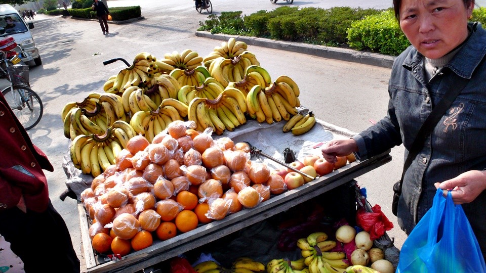
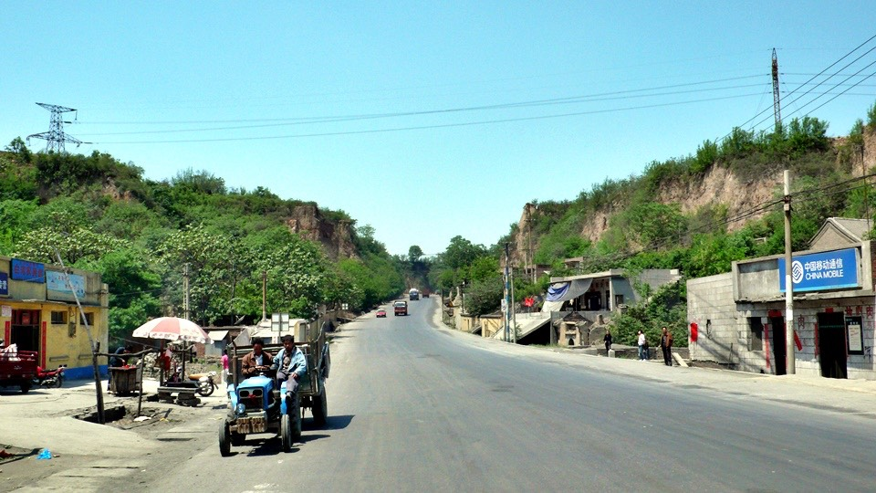
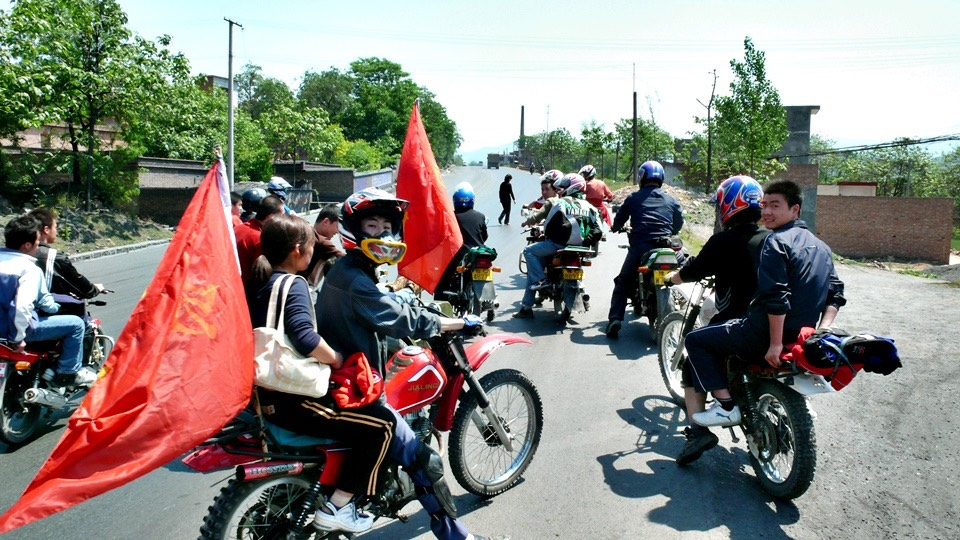
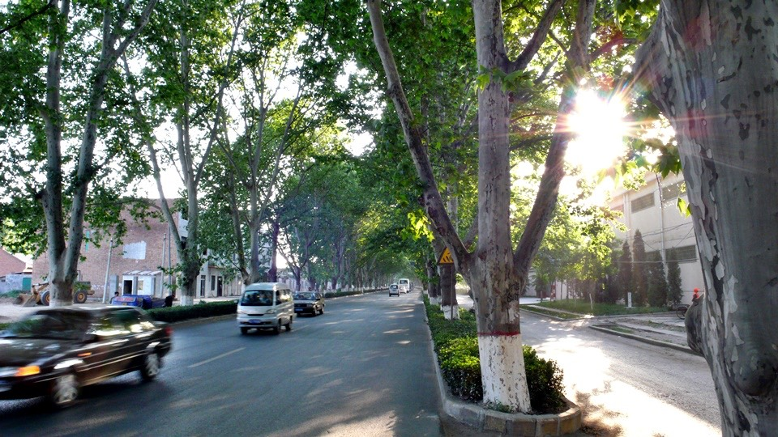

早餐依然在樓下的『放心早餐』吃，吃到第二天就變成熟客了，今天改吃豆腐腦和水煎包(六個一塊錢)。
老闆娘問我豆腐腦要吃甜的還是鹹的，我連講了三次『甜的』，她都聽成鹹的，
從這個例子就知道河南腔的口音有多難學了~_~
我今天居然忘記在出發之前把三個水壺都裝滿水，所以今天是在沒有任何飲水的情況下騎車的。
目標是西邊約134公里的洛陽，這個距離應該下午三點左右就可以輕鬆抵達，沒想到我又迷路，

多騎了五十多公里的冤枉路，好加在還是順利的到了洛陽。
早上九點開始有點口渴，所以跟小販買了三斤的香蕉，總共六塊錢，一共有十多根，
我發揮屬猴的本事，開始吃香蕉止渴，吃了大概十根總算覺得沒那麼渴了，

在沒水喝的情況下，也騎了將近八十公里，沿著310國道，有些上上下下的爬坡，但還不算太難搞，
後來實在有點口乾舌燥，對香蕉也提不起興趣，只好跑去雜貨店買飲料喝。
挑了一罐2.5公升的超大雪碧，這次真的是可口可樂出品的雪碧了。
分別把三個水壺都裝滿，然後借老闆娘賣冰棒的冰箱把汽水冰涼了路上喝，
裝不進水壺的部分，則通通裝進我的肚子裡，沒水喝但是有汽水可以喝，今天算喝的還不錯？
在等汽水變冷的時候，我又嘴饞買了兩根白糖清冰棒，一根五角，坐在屋簷下躲著太陽享受難得的清涼。
本來想說水壺裝汽水真是一個好計策，不僅利用空間，而且一整個下午都有汽水可以喝。
結果汽水裝進去沒半小時，氣就通通都跑光了，而且放在冰箱裡面冰的再涼也沒有用，
因為水壺放在單車上，一下子就溫掉了，我下午就喝著微溫的沒氣的糖水，這樣算喝的還可以？~_~
而且因為裝汽水的關係，水壺都變的黏答答的，我還得花時間把它們都沖洗乾淨。
當我沿著310國道，很安穩的移動的時候，明明前面就是通往洛陽，
但是我在交叉路口的時候還是習慣性的問路人洛陽該怎麼走？
結果有一個光頭大叔，他說我騎自行車的話，走那邊會比較快，然後比了一個跟道路指示牌不同的方向。
而我也真的相信他說的話，覺得既然有近路可以走的話，那何必繞遠路呢？

光頭大叔給的指示是對的，只是我走著走著就又迷路了，不小心又跑到山裡頭，開始爬山。
雖然自己有懷疑為什麼看指南針的方向是往南走，而不是往西走，但覺得走著走著路自然會出現吧。
後來遇到一票騎機車還揮舞著大旗，有點像是陽光形象的飆車族的人，
看我騎腳踏車騎到這，本來都在乘涼休息的他們，通通把車發動，然後團團把我圍住。

『小兄弟，你上哪去呀？』
『洛陽，順便問一下，走這到的了嗎？』
結果大家都笑了，因為他們正是從洛陽來的，而洛陽在我的反方向，我得回頭走才行。
仍然不死心的問了一下，如果繼續走這條路，那能到洛陽嗎？
答案是否定的，而且一直騎下去的話，還會騎回鄭州。
真是天殺的我的大豬頭，我又騎錯路了T_T
那就掉頭回去吧，還好剛剛迷路的時候都是上坡，回去的時候是下坡速度倒也挺快的。

到了一個都市，買一串鳳梨吃順便問一下小販，洛陽該怎麼走？
小販說我剛剛走來的路就是往洛陽的路，我又得回頭走才行了。T_T
怎麼成天都在回頭走呀，結果剛剛的下坡滑的太過頭了，現在又要一步一步的重新爬回去。
就這麼一來一往的來回走，多騎了將近五十公里的冤枉路，不但一點也沒有抄到近路，反而走的遠多了。
所幸總算是接回了310國道，往西走七十公里就是洛陽了，這時候已經是下午三點，
所以往西騎的時候，太陽就在我的正前方，陽光就對著我直照下來，臉熱呼呼的，趕緊塗點防曬油。

快要進入洛陽之前，有一長～大～段的綠色隧道路段，有一種走也走不完的感覺。
好像真的是鬼打牆，一直在原地繞一樣，
錯覺畢竟是錯覺，古都洛陽，在下午六點的時候終於抵達。

第一要務就是開始閒晃，順便找看看有沒有住宿的地方，
問了一個路人，他給了一個方向，騎過去一看，是洛陽賓館，看那氣派的裝潢，
在門口先打聽一下，這邊住一晚要多少錢？
『單人房的話，大概兩～三百塊一晚上吧。』
吐了吐舌頭就自討沒趣的離開這個昂貴的地方。
正打算問其他路人哪有住宿的地方的時候，有一個牽著腳踏車的歐巴桑，
車子的菜藍還載著一隻波斯狗(長的很像波斯貓的狗)
『你想上哪去呀？』
她好像跟我很熟似的，也沒問我太多問題，比如說我是打哪來的之類的，就直接切入核心。
『我想找便宜的住店地方？』
多虧這個波斯狗的主人的介紹，在洛陽找到一間『新新旅社』，
正要把單車扛上二樓去問價錢的時候，門口有一個用廣東話講手機的女生正把電話急忙的結束掉。
『你要住店的嗎？』掛掉電話之後她問我。
是呀，一晚上多少錢呀？
『有貴的、有便宜的，看你想住哪種囉？』
後來找到一間最便宜的，裡面只有一張單人床和一個垃圾桶，一晚上20塊錢。
因為我抵達洛陽的時間比預計的時間(五月三日)還要快了兩天，所以明天也打算在洛陽玩一天，
住一晚上20塊錢，住兩個晚上的話也可以便宜五塊，第二天就變成15塊錢。
晚餐就把出發第一天就在北京小馬那邊買的一碗泡麵給泡來吃。
因為我已經不爽它很久了，沒事大老遠背著一包泡麵騎十天車是怎樣，這一包是有寶嗎~_~
泡來吃掉之後感覺很爽，這樣又可以買新的東西來當儲糧了。
因為對衛生紙的需求量比我想像中還要來的大，老是跟餐館或是住店的地方拿個三張、五張的應急也不是辦法，
所以就去雜貨店買了一捲一塊錢的衛生紙，這樣我就可以盡情的擤鼻涕，不用把衛生紙晾乾再回收使用了XD
抱著髒衣服準備去洗，順便沖個涼的時候，認識一個也是旅行中的青年，他大概已經玩了半個中國了。
向他打聽情報之後，明天打算去洛陽古城晃晃，還有白馬寺應該也不錯唷～*^^*
旅社的人說，洛陽挺大的，建議我去報攤買一張地圖，
其實我自己也怕明天騎出去遛達之後，就走不回旅館的路了~_~
今天騎了一百八十幾公里，有點太過勞了些，放個假輕鬆一下也挺好！
人一生能有幾次機會到洛陽來呢？
繼續閱讀：5.2 九朝古都巡禮
中國-人民幣－ 1：4.3 台幣
5.1
總計：39元
早餐豆腐腦＋水煎包1.5元、香蕉三斤6元、2.5公升的雪碧7元、白糖冰棒兩隻1元、鳳梨串1元、住店20元、網吧一小時1.5元、衛生紙1元